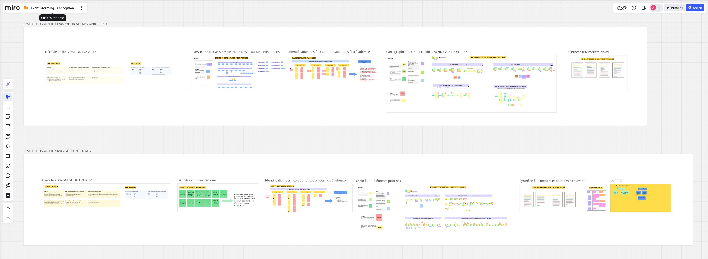
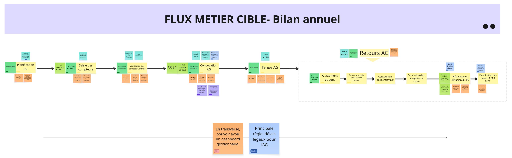
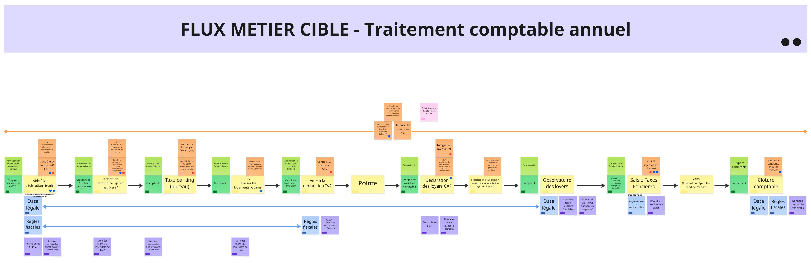

Business and Product
PMPOCTOBusiness consultantsTrainingSupport

Target business workflow mapping for a post-acquisition accounting redesign - 2 days, Miro restitution, 4 mapped flows.
Septeo-ADB, the French market leader in property management software (3,200 agencies, 150,000 users), had just acquired a new accounting product to consolidate both its core domains: co-ownership management (Syndic) and rental management.
The acquired product covered approximately 90% of the Syndic scope but only 50-60% of rental management. The goal: define target business workflows independently of existing tools, identify missing features, and prioritize development in an "AI-centric" logic.
The real challenge. User interviews had been refused for budget reasons - we arrived with minimal domain knowledge. The client contact was unfamiliar with user-centered approaches.
Day one pivot. The two workshops were initially identical in structure. From the first morning, Syndic and rental management use cases diverged significantly. The second workshop agenda was revised at the end of day one, with business participants attending both sessions.
End users were in the minority but held a key position for field insight and flow prioritization.
PMPOCTOBusiness consultantsTrainingSupport
Property managers2-3 per workshop
In a minority position, but with a key role in prioritizing flows according to field needs.
Each workshop followed a structured arc, moving from collective sense-making to concrete actionable outputs. The prospective dimension - imagining target flows unconstrained by the current tool - was embedded in stage 4, with a focus on identifying candidates for AI automation or assistance.
Objectives, co-creation rules, getting the room aligned.
Identifying JTBDs, translating into business flow candidates.
End users only - dot voting to rank flows by real-world impact.
Events, commands, actors, systems, rules, hotspots and AI ideas.
Each sub-group presents - hot retrospective with all participants.

Full mapping of business jobs-to-be-done across rental management and co-ownership (accounting scope) ; shared foundation built with end users before any tool constraint.
4 priority flows (critical and recurring) mapped in detail via Event Storming: events, commands, actors, systems, rules, hotspots and innovation opportunities ; delivered as actionable summary cards with AI automation candidates identified step by step.
Major workflow improvements prioritized and pitched by property managers via dot voting ; roadmap decisions grounded in field reality, not product assumptions.


The software covered part of the scope, but remaining gaps had to be objectified through target business workflows.
The mapped flows made it possible to cross-reference business needs, existing features and AI automation candidates.
Product teams could prioritize at workflow level, not through abstract feature requests. No follow-up on implementation received since delivery.
Separating existing-state mapping with business and product teams from the prospective phase with more end users would have made both exercises more effective.
A short upfront business interview session would have significantly reduced context-building time. These are framing points to integrate systematically into future proposals.
Cartographie des flux métiers cibles pour une refonte comptable post-acquisition - 2 jours, restitution Miro, 4 flux cartographiés.
Septeo-ADB, leader français des logiciels pour administrateurs de biens (3 200 agences, 150 000 utilisateurs), venait d'acquérir un nouveau produit comptable pour consolider ses deux métiers clés : la gestion de copropriété (Syndic) et la gestion locative.
Le produit acquis couvrait environ 90 % du périmètre Syndic, mais seulement 50 à 60 % de la gestion locative. L'objectif : définir des flux métiers cibles indépendamment des outils existants, identifier les fonctionnalités manquantes et prioriser le développement dans une logique « IA-centric ».
Le véritable défi. Les interviews utilisateurs avaient été refusées pour des raisons budgétaires : nous sommes arrivées avec une connaissance métier minimale. L'interlocuteur client était peu familier des approches centrées utilisateur.
Pivot au premier jour. Les deux ateliers étaient initialement conçus selon la même structure. Dès la première matinée, les cas d'usage Syndic et Gestion locative se sont révélés nettement différents. Le programme du second atelier a été revu en fin de première journée, avec les participants métier présents sur les deux sessions.
Les utilisateurs finaux étaient minoritaires, mais en position clé pour la vision terrain et la priorisation des flux.
PMPOCTOConsultants métierFormationSupport
Administrateurs de biens2-3 par atelier
En position minoritaire, mais avec un rôle clé pour prioriser les flux au plus près des besoins terrain.
Chaque atelier suivait une progression structurée, de la construction collective du contexte à des livrables actionnables. La dimension prospective, imaginer les flux cibles sans contrainte de l'outil actuel, était intégrée à la phase 4 avec un focus sur les candidats à l'automatisation ou à l'assistance IA.
Objectifs, règles de co-création et alignement du groupe.
Identifier les JTBD et les traduire en flux métiers candidats.
Vote des utilisateurs finaux pour classer les flux selon leur impact terrain.
Événements, commandes, acteurs, systèmes, règles, hotspots et idées IA.
Présentation de chaque sous-groupe et rétrospective à chaud.
Cartographie exhaustive de tous les jobs-to-be-done métier pour la gestion locative et les syndics (partie comptable) ; base commune construite avec les utilisateurs finaux avant toute contrainte outil.
4 flux prioritaires (critiques et récurrents) cartographiés en détail via Event Storming : événements, commandes, acteurs, systèmes, règles, hotspots et opportunités d'innovation ; restitués en fiches synthèse actionnables avec candidats à l'automatisation IA flux par flux.
Priorisation et pitch des évolutions majeures effectués par les administrateurs de biens via dot voting ; décisions de roadmap ancrées dans le terrain, pas dans les hypothèses produit.
Le logiciel couvrait une partie du périmètre, mais les écarts restants devaient être objectivés à partir des flux métiers cibles.
Les flux cartographiés ont permis de croiser besoins métier, fonctionnalités existantes et candidats à l'automatisation IA.
Les équipes produit ont pu prioriser à l'échelle des workflows, pas sous forme de demandes abstraites. Pas de retour sur l'implémentation à ce stade.
Séparer la cartographie de l'existant, menée avec les équipes métier et produit, de la phase prospective, menée avec davantage d'utilisateurs finaux, aurait rendu les deux exercices plus efficaces.
Une session d'interviews métier en amont, même courte, aurait réduit significativement le temps de montée en contexte. Ce sont des points de cadrage à intégrer systématiquement dans les prochaines propositions.